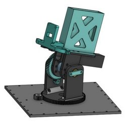
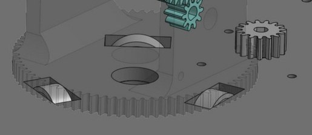
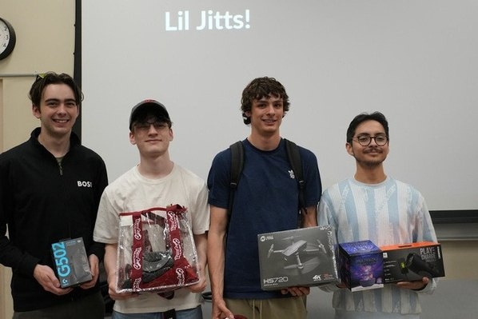

Two-Axis Nerf Turret
In 24 hours, my team built a two-axis Nerf turret that spins a full 360 degrees, feeds from a gravity magazine, and rides on a custom thrust bearing. An Arduino and a Raspberry Pi handled the motors and servos. I iterated the servo-driven indexer to improve rigidity and tolerances during assembly. We placed second out of 40 teams, with high scores for complexity and completeness.



